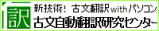

| サイト名 | 紹介 |
|---|---|
| 東大寺学園の公式サイトです。 | |
| このサイトでhtmlやcssについて勉強しました。 説明がすごくわかりやすいです。 |
おすすめの学習サイト |
| edmodo | 世界中の先生の支持を集める世界最大の教育プラットフォームです。 |
| 定理の証明や利用方法について詳しく書かれています。 | |
|  | 文語体と口語体を相互翻訳するソフトウェア『古文翻訳装置』を無償でダウンロードできます。 |
| 自宅で学ぶ高校生物 | 画像や動画が多く使われていて、すごくわかりやすいです。 |
| 自宅で学ぶ高校生物の姉妹サイトです。 | |
| いろいろな種類の白地図を作ることができます。 |